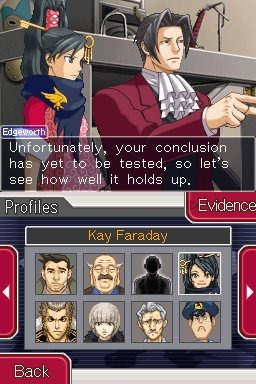
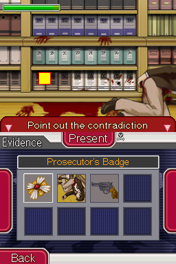
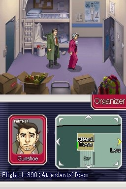
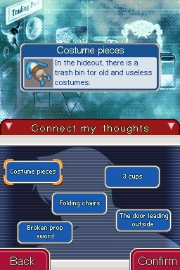
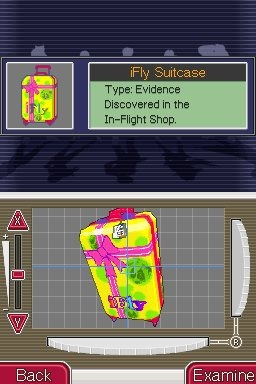

Ace Attorney Investigations est le premier spin-off de la série Ace Attorney. Il est sorti après Apollo Justice et compte donc des petites références aux 4 premiers opus mais l’histoire se déroule juste après celle du 3. Le protagoniste est cette fois-ci Benjamin Hunter (Miles Edgeworth en anglais), le charismatique procureur et adversaire éternel de Phoenix Wright. Le jeu a l’air également différent des autres opus par son mode de progression qui se fait par des déplacements dans des décors en 2D. Il s’agit également du premier opus de la série sur lequel le créateur de la série Shuu Takumi n’a pas du tout travaillé.
La sortie de Ace Attorney 3 tardive (le jeu n’est sortie qu’après le 4e opus et que grâce à une pétition des fans) marquait déjà les problèmes de localisation de Capcom à cause des « mauvaises ventes de la série », cette fois-ci Capcom va un peu plus loin puisque le jeu n’a même pas été traduit en français et c’est d’ailleurs le dernier Ace Attorney qui sortira en boite en dehors du Japon (à l’exception de Professeur Layton Vs Phoenix Wright puisque c’est un Professeur Layton…). Heureusement, l’année dernière une fantrad FR du jeu est sorti et vous pouvez donc y jouer facilement avec un linker.
Personnellement, comme beaucoup de monde à l’époque je ne pouvais pas y jouer parce que je n’étais pas assez à l’aise avec l’anglais et que je suis aujourd’hui curieux de voir ce que cet intrigant épisode vaut.
On incarne donc Benjamin Hunter (oui je vais utiliser les noms français vu que j’ai grandi avec la VF) après que les événements du troisième opus se soient produits. J’ai pas vraiment de résumé à faire de l’histoire si ce n’est qu’elle tourne autour d’un réseau de contrebande, les 5 chapitres que compte le jeu tournent tous autour de ce réseau ce qui est un plus par rapport aux autres opus (par exemple dans Trials and Tribulations seuls les chapitres 1, 4 et 5 ont un rapport entre eux). J’ai trouvé que l’histoire avait été bien faite pour tourner autour de Hunter, on en apprend plus sur son passé, sa nouvelle obsession pour la vérité y est exhibée, certaines choses le relient assez bien avec sa nouvelle assistante et on retrouve même quelques détails comme sa phobie des ascenseurs.

Hunter travaille toujours avec Dick Tektiv qui le remplacera parfois par Franziska. La véritable assistante ne pointera le bout de son nez qu’à partir du chapitre 3. Il s’agit de Kay Faraday, une fille aux allures de ninja qui s’autoproclame successeur du Yatagarasu, un voleur légendaire connu pour dérober des preuves et pièces à conviction dans le but d’aider la justice, un peu comme un robin des bois. Elle forme un bon duo comique avec Hunter qui entre en conflit avec elle à chaque fois qu’elle a envie de voler un truc pour s’entraîner ou d’enfreindre la loi. Elle se distingue d’une Maya ou d’une Vérité par son côté garçon manqué ou par sa fierté de voleuse. C’est un personnage très réussi et attachant. Il en est de même pour l’ennemi principal du jeu : Lang Shi-Fu, un agent d’Interpol faisant office de procureur, très classe (ses lunettes avec cicatrices intégrées sont hilarantes), il passe son temps à réciter des proverbes de son vieux « maître chinois », il forme un très bon duo avec son assistante taciturne venant lui apporter tout un tas d’objets en plein discours et il a une armée de 99 agents faisant tout un tas de choses super rapidement grâce au pouvoir surnaturel de sa discipline. C’est peut-être pas le meilleur ennemi de la série mais il est réussi contrairement à un certain Gavin d’Apollo Justice… Les autres personnages sont toujours très bien, ce sont toujours des personnages très caricaturaux et exubérants qui font bien rire. Le chara design est toujours au top de même que les animations très nombreuses et créatives des personnages (rappelons que la plupart des visual novels de cette période (et même d’aujourd’hui) ne disposaient d’aucune animation pour les personnages !).

La première fois que j’ai entendue parler de ce jeu, je pensais que le concept était d’incarner un procureur contrairement aux avocats de la défense dont on a l’habitude. En fait c’est complètement différent de ça…
Comme le sous-titre du jeu l’indique on mène une investigation, c’est-à-dire que du début à la fin du chapitre on reste sur la scène du crime et dans ses environs et on investigue. Les Ace Attorney sont découpés en phases d’enquêtes et de procès et pour Investigations c’est… pareil en fait, de temps en temps une personne va donner sa version des faits et vous allez avoir un contre-interrogatoire où il va falloir présenter des preuves, exactement comme lors des procès des autres opus.
Du coup, le gameplay est le même ? Techniquement oui mais au bout de quelque temps on se rend compte que ça change des choses dans la narration. Déjà l’alternance entre les phases d’enquête et puis d’interrogatoire est plus libre qu’avant et vous pouvez carrément arrêter de mener un contre-interrogatoire pour aller enquêter sur un truc et puis revenir après. Le fait de se limiter à un seul lieu est une contrainte assez particulière également, j’ai trouvé que c’était assez bien fait dans le début du chapitre 2 qui se passe dans un avion en plein vol ou le début du chapitre 3 où on est enfermé dans une salle. Cela donne également une contrainte de temps puisque l’affaire est généralement bouclée dans la journée contrairement aux enquêtes des autres Ace Attorney qui peuvent durer plusieurs jours durant lesquels il peut se passer tout un tas d’événements extérieurs.

Les déplacements ne se font plus par l’intermédiaire de choix, on déplace notre personnage nous même dans des décors en 2D. On n’est alors plus limité à un écran fixe en point ‘n click pour inspecter et, même si le jeu est assez linéaire, on peut se déplacer de pièces en pièces. Bonne chose c’est que toutes les animations des personnages ont été reproduites sur les sprites des personnages apparaissant lors des phases d’explorations, on les voit alors réagir physiquement même lors des dialogues mineurs où les grands sprites n’apparaissent pas. Ce type de représentation permet d’ajouter tout un tas de clins d’œil à la série, on va trouver le réalisateur du Samurai d’Acier bredouiller qu’il veut adapter sa série en film, Eva Cozésouci, en planque à la recherche de son prochain scoop ou même Phoenix, Maya et Pearl faisant de la barque dans l’arrière-plan d’un parc d’attractions.

Un ajout vraiment important de cet épisode est le système de Logic qui se retrouve jusque dans les thématiques de l’histoire (les personnages essayent de montrer qui a la meilleure logique). Lorsque vous investiguer vous allez tomber sur un certain nombre de faits qui vont s’accumuler dans un dossier. Si vous réussissez à associer de façon logique deux faits ensembles vous en tirerez une déduction qui vous permettra de faire avancer l’histoire (dans le cas contraire votre jauge de crédibilité décroîtra). Je vous donne un exemple : si votre Fait 1 est « la victime a été poignardée par une arme contondante » et que votre Fait 2 est « une arme ensanglantée a été trouvée dans un buisson » vous pourrez rapprocher les deux pour en déduire que la victime a été tuée par ce biais là. C’est un exemple de merde mais en général c’est vraiment bien trouvé et ça vient bien compléter le système de preuves.
De façon assez anecdotique, votre partenaire vous suit partout et vous avez une option dans le menu pour lui parler à tout moment. La possibilité d’examiner les objets en 3D est toujours présente.
Maintenant parlons plus en détail de la progression et de la qualité générale de l’histoire.
Le jeu comporte 5 affaires bien consistantes, il dure aussi longtemps que les épisodes principaux. La première faisant office de tuto est toujours la moins bonne mais je la trouve assez réussite ici. La seconde affaire comporte l’un de mes personnages favoris de la série (Meele) et est je trouve très accrocheuse. La troisième affaire est un peu en deçà du reste même s’il y a des bonnes idées dans la partie policière, je pense que ça vient des méchants qui ne sont pas très intéressants, ce chapitre fait intervenir pour la première fois Kay et Lang ce qui le sauve un peu. La 4e affaire est une affaire flashback un peu fan service qui figure une grosse partie de l’intrigue principale, on y rencontre deux des meilleurs personnages du jeu : l’inspecteur Badd caricature d’inspecteur de polar hyper badass et Calisto Yew, une avocate de la défense tendant entre crise hystérique et parfait sérieux que l’on affrontera. Enfin, la dernière affaire est très loin de décevoir, la partie policière est extrêmement bien écrite et les rebondissements sont tellement nombreux que le jeu s’en moque même à un moment, c’est un grand final comme on en a l’habitude.

J’ai trouvé le jeu assez simple mais je ne trouve pas que c’est un reproche dans le sens où la critique que l’on faisait souvent aux premiers Ace Attorney d’avoir certains choix très durs voir impossibles à trouver, ici on sent que c’est plus logique et ça tombe bien vu que c’est la thématique du jeu.
Maintenant pour donner un avis plus général sur le jeu. Je trouve que la globalité du scénario est très bien écrite et est vraiment très solide, je pense que le jeu est une valeur sûre qui sera sûre de plaire à ceux qui ont aimé la trilogie, ça n’est pas comme le 4 qui possède des choix controversés et des défauts assez gênants. Maintenant, si j’aurais un reproche à faire à l’histoire c’est que je trouve qu’elle manque un peu de folie, elle est moins mémorable que les épisodes précédents. Je pense que cela vient des contraintes de temps et de lieux du scénario qui empêche de vivre une grande histoire, après c’est une critique mineure, ça reste des contraintes très bien utilisées dans l’ensemble et qui changent des autres épisodes.
Les joutes verbales sont toujours aussi épiques et jouissives et font toujours tout le sel du jeu, le Pursuit theme est excellent donc y a vraiment aucune critique à faire à ce niveau-là.
La série Ace Attorney n’est pas connue pour ses innovations, le 3e épisode ne possède strictement aucune innovation de gameplay par exemple, en ce sens-là, Investigations apparaît comme l’épisode le plus novateur. Le mode de progression en 2D est original et le système de Logic est très bien foutu, ce qui permet de renouveler un peu l’intérêt de la série. Le jeu ne nous permet pas de jouer le rôle d’un procureur lors d’un procès comme on le pensait, il tourne plus autour d’une investigation comme son sous-titre l’indique, cela crée des contraintes de temps et de lieux qui sont bien menées, toutefois ces contraintes sont ce qui empêche au jeu selon moi, d’avoir de grandes histoires et de se hisser au rang des meilleurs jeux de la série (épisodes 1 et 3). Pour autant, l’histoire est incroyablement bien écrite et solide, si vous aimez les Ace Attorney il y a vraiment très peu de chances pour que vous n’aimiez pas celui-là.
Les suites : une suite de ce spin off est sortie, malheureusement uniquement au Japon (oui, la localisation est de pire en pire…), heureusement une fantrad anglaise est disponible sur la toile.

{kind=link}
{kind=link}
{kind=link}